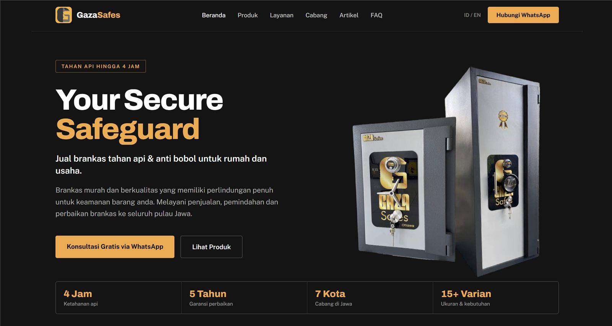
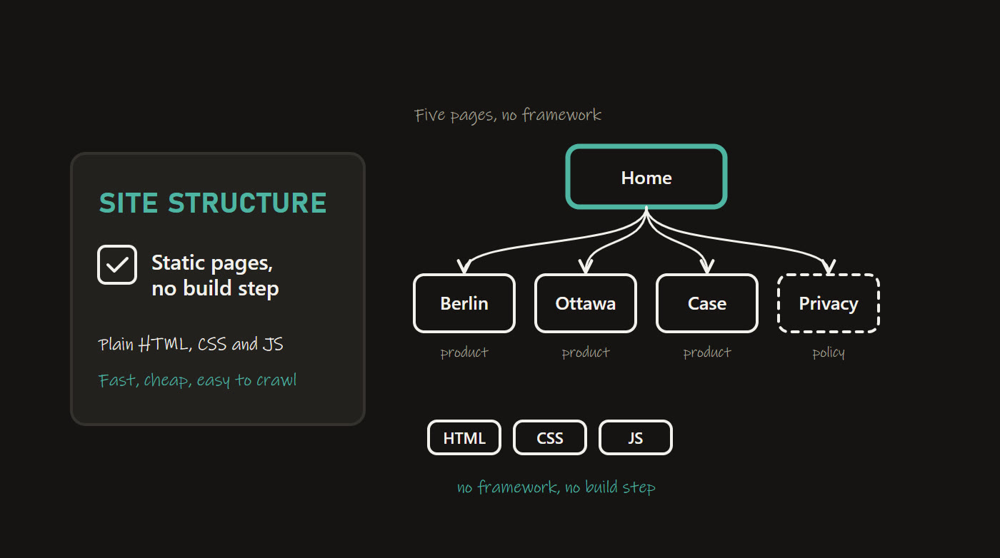
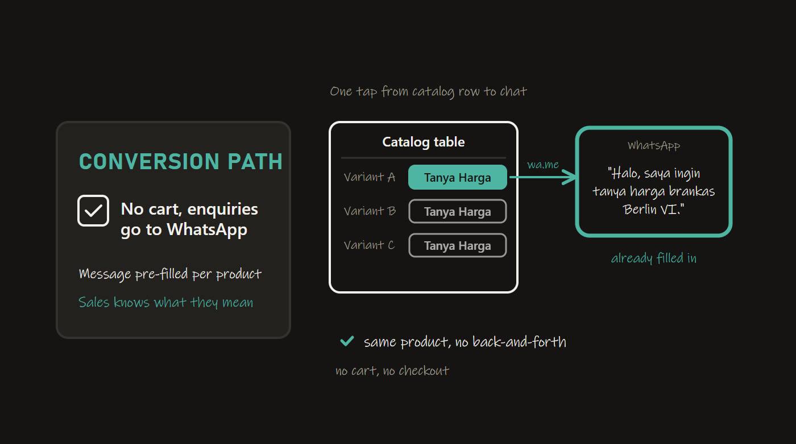
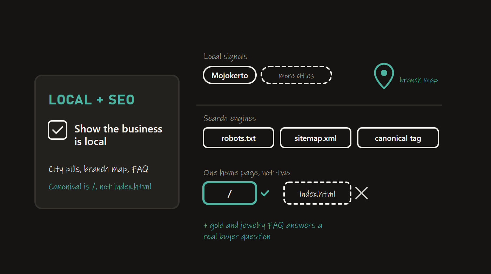
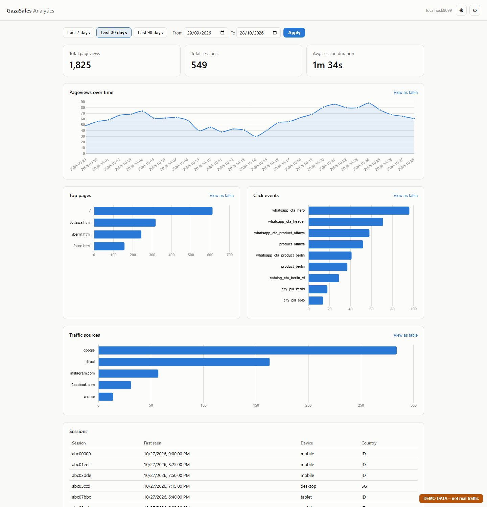

Case study · 2026
Turning every visit into a WhatsApp enquiry, and measuring it without the data leaving Indonesia.
GazaSafes sells fire-resistant safes for storing gold, coins and cash, at home or in a shop. I built its static site, where every button opens a pre-filled WhatsApp message instead of a cart, and a self-hosted analytics pipeline that replaces GA4: nothing is tracked until the visitor accepts, raw IPs are never stored, and hosting is planned in-country.

The problem
Every page said the same thing, and the one keyword it chased was unwinnable
The original site had one generic title and meta description reused across every page, no structured data, and no local-search signals, despite being a genuinely local business with seven physical branches.
Worse, the stated SEO target was the single word "brankas", a term dominated by national marketplaces like Ralali and Blibli, unwinnable for a small multi-branch business in any reasonable timeframe.
The solution
Compete on searches you can actually win
Branch-city keywords, not "brankas"
Targeting terms like "brankas Kediri" instead of the national word, where a small local business can realistically rank.
A unique title and description per page
Home, three product lines, seven branch pages and services each got their own tag pair, written to the product and city.
Structured data, priced honestly
Organization, LocalBusiness per branch, Product and FAQPage JSON-LD, with an AggregateOffer that carries no price field, since the site never shows one.
Two article pages, built end to end
Long-tail, real-question content, coded as standalone pages with a defined design system and Article/FAQPage schema.
What I built
From the landing page to a self-hosted analytics backend
No GA4. Every visitor event goes through a pipeline I built and can host in-country, and nothing is tracked until the visitor accepts.
FRONTEND
SITE STRUCTURE
Static, no framework or build step
A home page, three product pages (Berlin, Ottawa, Case) and a privacy page, in plain HTML, CSS and JS.
Being static makes it fast to load, cheap to host and easy for search engines to crawl.

CONVERSION PATH
No cart: every enquiry goes to WhatsApp
Every button opens wa.me with a message already filled in for that product or variant, such as "Halo, saya ingin tanya harga brankas Berlin VI." Sales already knows which product the buyer means.
Each product page has a catalog table of variant dimensions and weights, with a "Tanya Harga" link on every row.

LOCAL SIGNALS AND SEO
Showing the business is local
City pills mark the branch areas, and a Mojokerto branch map is embedded.
robots.txt, sitemap.xml and canonical tags. The home canonical is /, not index.html, so Google doesn't see two copies of the home page.
A gold and jewelry FAQ answers a real buyer question.

CONSENT-GATED TRACKING
Nothing leaves the browser until the visitor accepts
Consent first: js/analytics.js checks GazaSafesConsent.isAccepted() before every send.
Banner and link: a cookie banner, plus a "Pengaturan Cookie" footer link to change the choice later. privacy.html explains what's collected.
Labelled elements: any element with data-track is counted by one click listener, e.g. whatsapp_cta_hero, so the dashboard shows which button produced each enquiry.
Session token: a random ID in localStorage. If storage is blocked, a fresh ID is used and the pageview still counts.
Reliable delivery: navigator.sendBeacon still delivers when the tab closes; older browsers fall back to fetch with keepalive.
Payload: event type, page path, referrer, client timestamp, session token, site key, and click label if there is one.
BACKEND, THE ANALYTICS PIPELINE
01 · INGESTION API
The public door for events
Takes one event (/v1/events) or up to 20 at once (/v1/events/batch), and rejects bad requests with a clear error: 401 for a missing site key, 400 for a malformed payload. Rate limits are in place, but still placeholder values.
The server adds the timestamp, IP and user agent itself, so the browser can't fake them.
It replies 202 right away and puts the event in a Redis queue, so a slow database never makes visitors wait or loses events.
02 · WORKER
Cleans and enriches each event
Reads the queue, and after a restart first picks up any events it hadn't finished. Drops bot traffic before it reaches the database.
Adds country and city from a local MaxMind file (no network call), and hashes the IP with a secret so the raw IP is never stored.
Groups events into sessions, with a 30-minute timeout, and saves the UTM source. Sessions and pages go to Postgres; events go to ClickHouse, a database built for large event volumes.
03 · REPORTING API
Read-only, behind a key
Needs a bearer key, checked in a timing-safe way. Five endpoints: pageviews, top-pages, sessions, click-events and traffic-sources.
Every endpoint rejects date ranges over 92 days, so nobody can run an unbounded query over the events table.
04 · DASHBOARD
A static page that reads the reporting API
Headline numbers, a pageviews chart, bar charts for top pages, clicks and traffic sources, and a sessions table. Pick 7, 30 or 90 days or custom dates, switch any chart to a table, and choose light, dark or auto theme.
Chart.js is bundled in rather than loaded from a CDN, so it still works on a Pi with unreliable internet. The API address and key stay in that browser only.
HOW AN EVENT TRAVELS
- Visitor accepts
- →
- sendBeacon
- →
- Ingestion API
- →
- Redis Streams
- →
- Worker
- →
- Postgres + ClickHouse
- →
- Reporting API → Dashboard

05 · INFRASTRUCTURE
Docker Compose runs Postgres, ClickHouse, Redis and the services, with healthchecks, restart policies and a Dockerfile per service. Secrets live in .env files excluded from git.
06 · PRIVACY AND COMPLIANCE
The plan follows Indonesia's UU PDP: every stored field must support one of the five reports, there is no raw IP column or browser fingerprinting, and tracking waits for consent. Hosting is planned on a Raspberry Pi in Indonesia so personal data never leaves the country.
Background
A business selling safes for storing gold and coins whose website couldn't be found locally
GazaSafes sells, delivers, installs and repairs safes used for storing gold, coins, cash and documents, at home or in a shop, from seven branches across East Java: Pasuruan, Kediri, Nganjuk, Madiun, Solo, Mojokerto and Kudus. Every purchase inquiry ends the same way, in a pre-filled WhatsApp message, not a cart.
That's a good fit for local search, if the site is built to be found locally. It wasn't. My scope covered the whole stack: the static site and its SEO groundwork, a consent flow, and a self-hosted analytics pipeline that replaces GA4 so visitor data stays in Indonesia.
BRANCHES
7 cities across East Java
CONVERSION MODEL
WhatsApp-gated, no on-site price
MY SCOPE
Frontend, SEO and self-hosted analytics
STATUS
Frontend live; analytics tested locally
Define
How do you make a seven-branch business visible in seven different local searches at once?
HOUSEHOLD & SMALL BUYERS
Home, shop, place of worship. The Case product line addresses them directly in its copy.
BUSINESS & INSTITUTIONAL BUYERS
Cooperatives, clinics, gold shops, leasing offices. Ottawa and Berlin are written for them.
These two segments come straight from the site's own product copy, not from interviews. The harder question underneath them wasn't who buys, but which searches a small business with seven branches could realistically rank for, which is what the keyword strategy in Ideation answers.
Ideation
Trading a big keyword for seven winnable ones
PAIN POINT
"Brankas" is a national keyword the site can't win
BECAME
Seven branch-city keywords instead: "brankas Kediri", "brankas Madiun", and so on, one page per city.
PAIN POINT
Every page reads identically to Google
BECAME
A title/description pair per page, written to what that page actually sells or where it actually is.
For a business with physical branches, ranking on Google Maps brings in buyers faster than organic ranking. Google Business Profile in all seven cities, real photos, and consistent name/address/phone come before any on-page work.
On-page SEO (tags, schema, sitemap) is week two. Articles are month two onward: two a month, answering real buyer questions, is what actually moves a long-tail term over time.
Design
Building the pages the strategy needed
The two article pages were coded, not just planned: a font pairing and colour palette were defined and applied consistently across both, with photo placeholder frames and pre-written alt text ready for real photography.
Typography
HEADINGS
Archivo
BODY
Public Sans
Colour tokens
Testing & iterations
Reports based on dataset
What the reports show on the dataset. To test the pipeline end to end, I read the five reports from the dashboard (last 30 days).
| Report | Top result | Count |
|---|---|---|
| Pageviews, 30 days | all pages | 1,825 |
| Sessions | average 1m 34s | 549 |
| Top pages | /, then /ottawa.html | about 600, 320 |
| Click events | whatsapp_cta_hero | about 96 |
| Traffic sources | google, then direct | about 283, 163 |
What this confirms. Every report returns data from event to dashboard. Labelled buttons show which one produces the most enquiries. Sources fall back from UTM to referrer to direct. It does not say anything about real visitors: that data does not exist yet.
Result & final thoughts
A site that competes where it can actually be found
The frontend, the consent flow and the full analytics pipeline are done, and the pipeline was tested end to end locally. The frontend analytics work is committed; the plan document is not yet. Alongside that sits a keyword strategy built around what a seven-branch business can realistically rank for.
The decision I'd defend hardest is walking away from "brankas". A national keyword feels like the obvious target, but for a business this size it's a multi-year bet against companies with a different budget entirely.
Point the beacon at a real endpoint and set up the Raspberry Pi properly: TLS, backups and hardening.
Verify Google Business Profile is live and consistent across all seven cities, with real photos per branch.
Keep the two-articles-a-month cadence going and watch Search Console for the branch-city terms actually moving.